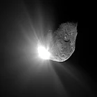

Main Page
From today's featured articleThe Arch of Remembrance is a First World War memorial designed by Sir Edwin Lutyens and located in Victoria Park, Leicester, in the East Midlands of England. A committee was formed in 1919 to propose a permanent memorial, and the first proposal was accepted, but eventually cancelled due to a shortage of funds. The committee then asked for a memorial arch, which Lutyens presented to a public meeting in 1923. With a large budget devoted entirely to the structure, the result is one of the architect's largest and most imposing war memorials, dominating Victoria Park and the surrounding area. The memorial was unveiled on 4 July 1925 in front of a large crowd. It cost £27,000, though the committee was left with a funding shortfall of £5,500, for which they were criticised in the local press. The arch is a Grade I listed building and, since 2015, has been part of a national collection of Lutyens's war memorials. (Full article...)
Recently featured:
Did you know ...
|
In the news
On this dayJuly 4: Earth at aphelion (11:35 UTC, 2020); Republic Day in the Philippines (1946); Independence Day in the United States (1776)

Tempel 1, after the Deep Impact collision
|
_cropped.jpg){kind=link}
_(cropped).jpg){kind=link}
{kind=link}
{kind=link}
Today's featured picture
_mating_composite.jpg)
|
|
Enallagma cyathigerum, the common blue damselfly, is a species of damselfly in the family Coenagrionidae. The species is widely distributed across the Palearctic realm and can reach a length of 32 to 35 mm (1.3 to 1.4 in). This composite photograph, taken in Oxfordshire, England, shows a pair of E. cyathigerum damselflies preparing to mate. Having transferred a bundle of sperm known as a spermatophore to secondary genitalia on the third segment of his abdomen, the blue-coloured male grasps the dull-coloured female by the head with the claspers at the tip of his abdomen. The female then curls her abdomen downwards and forwards under his body to pick up the sperm from the male's secondary genitalia. The distinctive posture that the pair adopt when transferring sperm is often called the "heart" or "wheel". Photograph credit: Charles J. Sharp
Recently featured:
|
Other areas of Wikipedia
- Community portal – Bulletin board, projects, resources and activities covering a wide range of Wikipedia areas.
- Help desk – Ask questions about using Wikipedia.
- Local embassy – For Wikipedia-related communication in languages other than English.
- Reference desk – Serving as virtual librarians, Wikipedia volunteers tackle your questions on a wide range of subjects.
- Site news – Announcements, updates, articles and press releases on Wikipedia and the Wikimedia Foundation.
- Village pump – For discussions about Wikipedia itself, including areas for technical issues and policies.
Wikipedia's sister projects
Wikipedia is hosted by the Wikimedia Foundation, a non-profit organization that also hosts a range of other projects:
Free media repository
Wiki software development
Wikimedia project coordination
Free textbooks and manuals
Free knowledge base
Free-content news
Collection of quotations
Free-content library
Directory of species
Free learning tools
Free travel guide
Dictionary and thesaurus